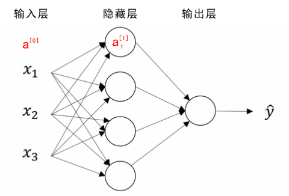
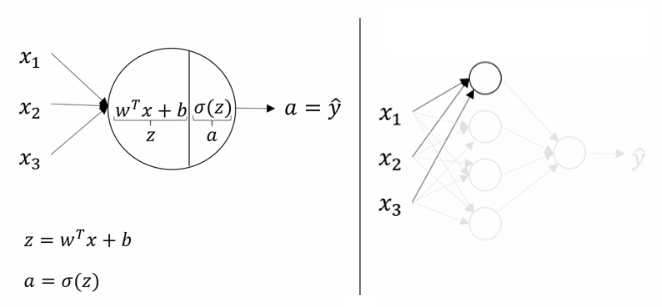
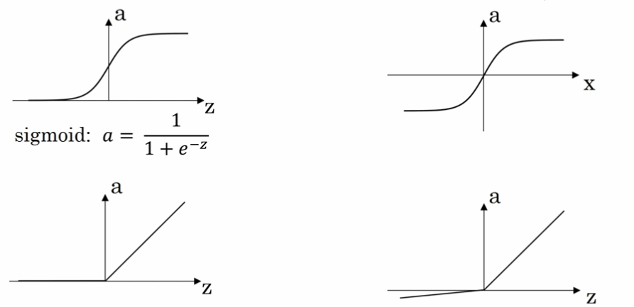
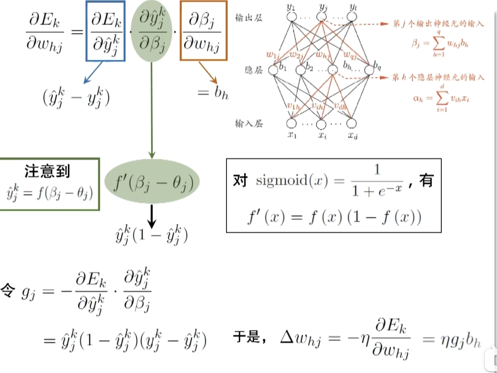
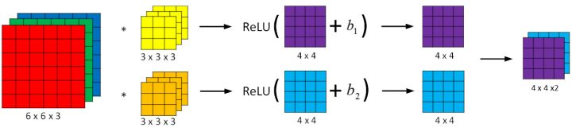
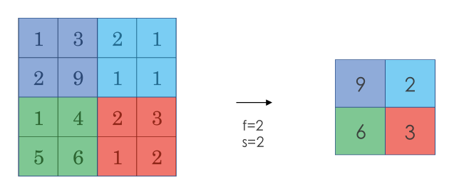
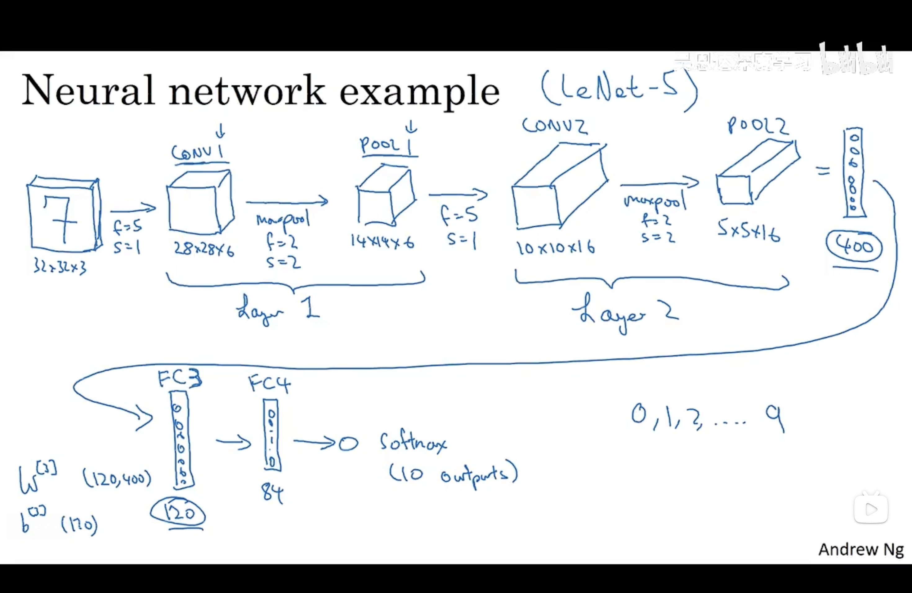

机器学习基础（二）神经网络
基础
竖向堆叠起来的输入特征被称作神经网络的输入层（the input layer）。
神经网络的隐藏层（a hidden layer）。“隐藏”的含义是在训练集中，这些中间节点的真正数值是无法看到的。
输出层（the output layer）负责输出预测值。

正向传播（推理）
概念
通过线性回归对不同的输入x计算，之后通过激活函数（Activation Function）映射后输出到下一层

激活函数
-
Sigmoid函数【图1】
将取值映射到0与1之间
$$ g(z) = \frac{1}{1+e^{-z}} $$
- ReLU 函数（the rectified linear unit，修正线性单元）【图3】
$$ a=max(0,z) $$
当 z > 0 时，梯度始终为 1，从而提高神经网络基于梯度算法的运算速度，收敛速度远大于 sigmoid 和 tanh。然而当 z < 0 时，梯度一直为 0，但是实际的运用中，该缺陷的影响不是很大。

反向传播（参数更新）
采用梯度下降方法，对损失函数的不同参数求偏导以调整参数的值。因为涉及到多层且损失函数是隐函数的形式故可采用链式求导法则计算偏导，即反向传播

可能的问题
梯度消失与梯度爆炸
| 问题 | 定义 | 原因 | 影响 | 解决方法 |
|---|---|---|---|---|
| 梯度消失 | 在反向传播中，梯度逐层传递时变得越来越小，最终接近于 0，导致模型无法有效更新权重。 | 激活函数（如 sigmoid、tanh）在其输入绝对值较大时梯度趋于 0；深层网络导致链式求导中多次相乘使梯度衰减。 | 模型训练停滞，尤其是深层网络，导致学习能力下降，权重无法更新。 | 使用 ReLU 激活函数；参数初始化方法（如 Xavier 或 He 初始化）；使用残差网络（ResNet）；梯度裁剪。 |
| 梯度爆炸 | 在反向传播中，梯度逐层传递时变得越来越大，导致梯度发散，参数更新不稳定。 | 网络权重初始化过大；深层网络导致链式求导中多次相乘使梯度指数增长；优化器学习率过大。 | 参数变为 NaN 或无穷大；损失函数发散，模型无法收敛。 | 使用梯度裁剪；参数初始化方法（如 Xavier 或 He 初始化）；使用适当的学习率；归一化输入数据；使用更稳定的优化器。 |
优化方法
降低过拟合
dropout正则化
dropout（随机失活）是在神经网络的隐藏层为每个神经元结点设置一个随机消除的概率，保留下来的神经元形成一个结点较少、规模较小的网络用于训练。dropout 正则化较多地被使用在计算机视觉（Computer Vision）领域
在正向传播过程中按照keep_prob概率随机使用部分神经元，再通过缩放因子 $$ \frac{1}{1-p} $$ 用来保证在丢弃后，激活值的期望与不使用 Dropout 时保持一致
在反向传播过程中，使用相同的神经元进行参数的更新
所以，通过dropout方法，使得模型不过度依赖任何一个神经元，以此实现网络更加鲁棒，避免过拟合，提升模型的泛化能力
加快收敛速度
mini-batch 梯度下降法
mini-Batch 梯度下降法（小批量梯度下降法）：对于batch_1，使用传统的梯度下降法得到模型M1；使用M1对batch_2使用传统的梯度下降法，依此类推。一直遍历每个batch直到模型收敛
| 对比维度 | batch_size = 1（SGD） | batch_size = 任意值（Mini-batch） | batch_size = 训练集大小（全批量梯度下降） |
|---|---|---|---|
| 梯度估计 | 基于单个样本计算梯度，梯度噪声大，不稳定。 | 基于一个批量样本计算梯度，噪声较小，梯度稳定性较高。 | 基于整个训练集计算梯度，梯度无噪声，最稳定。 |
| 计算效率 | 每次更新都很快，但无法利用并行计算，整体效率低。 | 利用并行计算，提高计算效率，但 batch 越大，时间越长。 | 计算效率最低，需要遍历整个训练集。 |
| 内存需求 | 内存需求最低，仅需存储单个样本的计算图。 | 内存需求随 batch_size 增加而增加，受硬件限制。 | 内存需求最高，可能超出内存容量。 |
| 收敛速度 | 更新频率高，但震荡明显，可能需要更多迭代才能收敛。 | 更新频率适中，收敛平稳，较快接近最优解。 | 更新频率低，但每次更新准确，收敛稳定但速度慢。 |
| 噪声控制 | 噪声较大，可能导致模型困于局部最优解或震荡。 | 有一定噪声，适度提升泛化能力，平衡计算效率和噪声。 | 噪声最小，更新方向最准确，但可能导致过拟合。 |
| 泛化能力 | 噪声大有助于跳出局部最优，泛化能力稍强。 | 噪声适中，泛化能力良好。 | 无噪声，可能过拟合训练集，泛化能力稍弱。 |
| 适用场景 | 数据量大、硬件限制较多时适用，或需要探索模型时使用。 | 常用训练方式，适合平衡硬件资源和训练效率的场景。 | 精度要求高、硬件资源充足时适用，如小型数据集。 |
CNN（卷积神经网络）
背景
应用计算机视觉时要面临的一个挑战是数据的输入可能会非常大。例如一张 1000x1000x3 的图片，神经网络输入层的维度将高达三百万，使得网络权重 W 非常庞大。这样会造成两个后果：
- 神经网络结构复杂，数据量相对较少，容易出现过拟合；
- 所需内存和计算量巨大。
因此，一般的神经网络很难处理蕴含着大量数据的图像。解决这一问题的方法就是使用卷积神经网络（Convolutional Neural Network, CNN）。
概念
卷积运算
通过每个小矩阵与卷积核做点乘得到特征图（feature map）。其作用主要为
- 特征提取
- 卷积运算通过卷积核（filter 或 kernel）与输入数据进行滑动计算，提取局部区域的特征（如边缘、纹理等）
- 每个卷积核可以学习不同的特征，多个卷积核共同构成了丰富的特征表达能力
- 降维或特征压缩
- 通过卷积核的步幅（stride）和无填充（valid padding）操作，卷积结果的空间维度可以减小，从而达到特征压缩的效果。


池化运算
对于卷积运算后的结果进行特征提取，常用的池化方法为最大池化。其作用主要为
- 特征提取
- 防止过拟合：通过采样只提取关键特征，提高泛化能力

全连接层
将上一层矩阵输出为一维向量后通过当前层的n个神经元训练，训练方式同基础的神经网络，包含线性方程计算后经过激活函数映射后输出
例子（LeNet-5）
输入层——卷积层1——池化层_1——卷积层2——池化层2——全连接层3——全连接层4——输出层

使用卷积的原因
相比标准神经网络，对于大量的输入数据，卷积过程有效地减少了 CNN 的参数数量，原因有以下两点：
- 参数共享（Parameter sharing）：特征检测如果适用于图片的某个区域，那么它也可能适用于图片的其他区域。即在卷积过程中，不管输入有多大，一个特征探测器（滤波器）就能对整个输入的某一特征进行探测。
- 稀疏连接（Sparsity of connections）：在每一层中，由于滤波器的尺寸限制，输入和输出之间的连接是稀疏的，每个输出值只取决于输入在局部的一小部分值。
池化过程则在卷积后很好地聚合了特征，通过降维来减少运算量。
由于 CNN 参数数量较小，所需的训练样本就相对较少，因此在一定程度上不容易发生过拟合现象。并且 CNN 比较擅长捕捉区域位置偏移。即进行物体检测时，不太受物体在图片中位置的影响，增加检测的准确性和系统的健壮性。